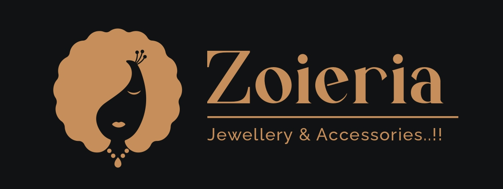

<mat-toolbar class="con">
    <button class="menu-btn" mat-icon-button *ngIf="sidenav.mode==='side'" (click)="sidenav.toggle()">
        <mat-icon *ngIf="!sidenav.opened">
            menu
        </mat-icon>
        <mat-icon *ngIf="sidenav.opened">
            close
        </mat-icon>
    </button>

     <div class="header-btn">
    
hey there cutiee ❤ {{nammee}}
    </div>

   
    
</mat-toolbar>
<app-header></app-header>

<mat-sidenav-container>
    <mat-sidenav #sidenav="matSidenav">
        <app-sidenav></app-sidenav>
    </mat-sidenav>

    <mat-sidenav-content class="content">
        <router-outlet></router-outlet>
    </mat-sidenav-content>

</mat-sidenav-container>